CHAPTER 3 BASIC PROBABILITY AND STATISTCAL CONCEPTS pp. 66-86
(3.1) INTRODUCTION p. 67
(3.2) PROBABILITY p. 68
(3.2.1) Random Experiments and Events p. 68
(3.2.1) The Relative-Frequency Approach p. 69
(3.3) CUMULATIVE DISTRIBUTION FUNCTION p. 71
(3.4) STATISTICS p. 74
(3.4.1) Univariate Statistics p. 77
(3.4.2) Multivariate Statistics p. 82
BASIC PROBABILITY AND STATISTICAL CONCEPTS
INTRODUCTION
We now review the basic concepts of probability and statistics and begin by looking at some definitions.
http://www.shodor.org/interactivate/discussions/pd15.html
A very simple distinction between probability and statistics is that statistics is concerned with actual data (that may or may not be useful for finding probability), while probability is concerned with the measurement of chance.
For example, collecting data about large numbers of people and using this data for studying other large groups of people is statistics. The only time it can be used for probability, is when all the experiments are the same (or almost the same). You can use data (statistics) from rolling a six-sided die one million times to find the chances (probability) of rolling 5 on your next try. You cannot use data (statistics) from studying driving records of a million people to find the chances (probability) of yourself having an accident today.
http://www.cs.sunysb.edu/~skiena/jaialai/excerpts/node12.html
Probability and statistics are related areas of mathematics which concern themselves with analyzing the relative frequency of events, although there are fundamental differences in the way they see the world:
Probability deals with predicting the likelihood of future events, while statistics involves the analysis of the frequency of past events.
Probability is primarily a theoretical branch of mathematics, which studies the consequences of mathematical definitions. Statistics is primarily an applied branch of mathematics, which tries to make sense of observations in the real world.
Consider how each reacts if they look at a game of craps: a probabilist would see the dice and think “Six-sided dice? Presumably each face of the dice is equally likely to land face up. Now assuming that each face comes up with probability 1/6, I can figure out what my chances of losing are.”
A statistician would see the dice and think “Those dice may look OK, but how do I know that they are not loaded? I'll watch a while, and keep track of how often each number comes up. Then I can decide if my observations are consistent with the assumption of equal-probability faces. Once I'm confident enough that the dice are fair, I'll call a probabilist to tell me how to play.”
In summary, probability theory enables us to find the consequences of a given ideal world, while statistical theory enables us to measure the extent to which our world is ideal.
http://www.cs.purdue.edu/homes/gopal/cs543/lectures/15.pdf
In probability we define a model and ask how objects ”behave” in that model, while in statistics, we observe the ”behavior” of objects and ask what is the ”likely” model that explains this behavior.
PROBABILITY
Probability (a number between 0 and 1) is used to quantify the likelihood or chance that a measurement falls within some set of values.
From Probabilistic Methods of Signal and System Analysis by G. Cooper and C. McGillem, 1999, 3rd edition.
Probability is required when we make measurements in the real world where we don’t know exact values (i.e., when we manufacture actual resistors or transistors, the resistance and transistor parameters do not all have the same value, and those values generally vary with temperature or frequency of operation). Another example is that we now must assume that analog or digital signals will have noise associated with them (i.e. we no longer get pure sine waves of one frequency). In the real world we no longer have a deterministic system (one that is precisely or exactly defined, strictly true under all circumstances) and must deal with stochastic systems which means that there is a chance or random component in the system.
Probability theory is required when there is uncertainty present. Well known for its applications in games and especially gambling, but it is also useful in engineering. Most of the physical laws you learned in basic engineering and physics courses (Ohms’s law, Kirchoff’s laws etc.) are true on a large scale but not necessarily on the small scale. What they actually represent are laws that are true only in the average sense. Since charge carriers are particles / waves, we know that their behavior cannot be continuous – right now there is no such thing as fractional charge (i.e. there is no particle that can exist on its own that has a smaller electrical charge than an electron or proton), also all charge carriers do not have the same velocity, temperature etc.
Most of the time the average behavior of a system is all we need in order to solve an engineering problem. If we can avoid using probability to solve a problem do so, since this makes things simpler. But at some point the level of noise or other random component will be so large that we will be forced to use probability.
Random Experiments and Events
First we define some key probability terms; an experiment is some action that results in an outcome. A random experiment is one in which the outcome is not known ahead of time. A single performance of an experiment is referred to as a trial. The set of all possible outcomes in any given experiment is called the sample space and it can be discrete (finite number) or continuous (infinite number of outcomes). An example of a discrete experiment would be a coin toss, while an example of a continuous experiment would be the value of sine wave at any specific time.
In most situations, we are interested in some characteristic of the outcomes of our experiment as opposed to the outcomes themselves. One example using the experiment named “draw a card from a deck of 52 cards”, is that we may not be interested in which card we draw (the outcome) but instead the fact that it is or is not a spade. This subset of the sample space is referred to as an event. Another event might be getting 10 heads in a row when we toss a coin 10 times.
Another key concept in connection with random events is that of equally likely events. An example – if we toss an unbiased coin, we expect it to be equally likely that we will get a head or a tail (same with unbiased die toss or well shuffled card deck). Another way of saying equally likely is selected at random. A good political survey must be designed so that each voter is equally likely to be questioned (randomly selected).
An event is referred to as the outcome of a trial (heads or tails, 1 to 6 on die etc.), but we do not know which will occur at any given time. We have both elementary events (drawing any one card) and composite events (drawing a heart from a full deck – can be any one of 13 elementary events). We can use R to take random samples;
x <- 1:6 # create 6 element vector
prob.vector <- c(rep(1/6, 6)) # create probability values for the above vector
sample(x, replace=TRUE, prob=prob.vector) # randomly sample 6 times with replacement
[1] 6 3 6 5 4 2 # will be different each time
If an outcome of an experiment is uncertain ahead of time, the possible outcomes are referred to as random events. To each of these events it is possible to assign a number, called the probability of that event, and this number is a measure of how likely that event is. A simple example is our unbiased coin toss experiment where the heads or tails events are equally likely, and the probability of each is ½.
Of the various approaches to probability, the two that are the most useful are the relative-frequency approach and the axiomatic approach. The relative frequency approach is useful because it attempts to attach some physical significance to the concept of probability, but its limitation is its difficulty in deducing mathematical structure for complicated situations. The axiomatic approach treats the probability of an event as a number that satisfies certain postulates, and it does not matter that this number may or may not relate to anything in the real world. We will use the relative-frequency approach for simple cases and the axiomatic for more complicated situations.
The Relative-Frequency Approach
This approach is closely linked to the frequency of occurrence of the defined events. For any given event, the frequency of occurrence is used to define a number called the probability of that event and this number is measure of how likely that event is. Usually these numbers are assumed based on our intuition about the experiment or on the assumption of equally likely events.
The relative frequency of an event is defined as the number of times it occurs divided by the total number of trials performed (N), when we let N approach infinity. When a phenomenon called statistical regularity occurs, the relative frequency of an event tends to stabilize and approach a number called the probability of that event.
There are only 4 basic concepts required for this approach:
The probability of any single event occurring is between 0 and 1
An impossible event has a probability = 0 (see exception below)
A certain event has a probability = 1 (see exception below)
The sum of a complete set of mutually exclusive (nothing in common with each other) events = 1
Special note is that the probability of one single discrete event defined on a continuous sample space equals 0, and the converse of this is that an event can occur even if its probability = 0. Also note that in this same situation the probability of all events except that one single event occurring = 1, so again events with a probability = 1 may not occur.
Using deck of cards again; if we draw one card for an infinite number of times, the probability of getting any one card = 1/52. The probability of getting an ace = 4/52, the probability of getting a heart = 13/52 etc.
Example – we have a bin of resistors of various resistances and power values. Now do some examples of marginal probabilities where we are only concerned with one of the variables (resistance in this case):
|
|
Resistance Values |
|
|
|
|
|
Power |
1 ohm |
10 ohm |
100 ohm |
1000 ohm |
Totals |
|
1 W |
50 |
300 |
90 |
0 |
440 |
|
2W |
50 |
50 |
0 |
100 |
200 |
|
5 W |
0 |
150 |
60 |
150 |
360 |
|
Totals |
100 |
500 |
150 |
250 |
1000 |
Pr(1 ohm) =100 / 1000 = 0.1 Pr(10) = 500 / 1000 = 0.5
Pr(100) = 150 / 1000 = 0.15 Pr(1000) = 250 / 1000 = 0.25
Since we have accounted for all resistance values and each resistor is mutually exclusive (since it cannot have more than one value as defined here) so Sum of Pr = 0.1 + 0.5 + 0.15 + 0.25 = 1.0
Now look at the probability associated with the power ratings (don’t care what the resistance values are) again this is a case of marginal probabilities;
Pr(1W) = 440 / 1000 = 0.44 Pr(2W) = 200 / 1000 = 0.2 Pr(5W) = 360 / 1000 = 0.36
Once again, since we have accounted for all power values and the values are mutually exclusive (since a resistor cannot have more than one power value as defined here) so Sum of Pr = 0.44 + 0.2 + 0.36 = 1.0
Now what if we want to know what the probability of finding a 10 ohm resistor with a 5W power rating is (this is called a joint probability since we are interested in more than 1 event at the same time). Pr(10 ohm, 5W) = 150 / 1000 = 0.15 We can also calculate the other 11 joint probability in the same manner. Just go through the table one box at a time. Again the total probability of all these will sum to 1 since they are mutually exclusive.
Next we define conditional probability, which is the probability of one event occurring (A), given that another event (B) has already occurred i.e. Pr(A | B). The probability of selecting a 10 ohm resistor given that the chosen resistor is already known to be a 5W resistor is Pr(10 ohm | 5W) = 150 / 360 = 0.417
Now multiply this probability by the probability that a resistor is a 5W = Pr(5W) = 360 / 1000 = 0.36 and you get the joint probability again.
Pr(10 ohm | 5W) * Pr(5W) = 0.417 * 0.36 = 0.15 = Pr(10 ohm, 5W) which also equals
Pr(5W | 10 ohm) * Pr (10 ohm) = 0.3 * 0.5 = 0.15
so we can now say that Pr(A,B) = Pr(A | B) * Pr(B) = Pr(B | A) * Pr(A) which means that the joint probability of two events can always be expressed as the product of the marginal probability of one event and the conditional probability of the other event given the first event has already occurred.
Now look at these definitions with respect to a two consecutive unbiased coin toss. If we want to find the probability of getting 2 heads in 2 tosses we know this is 0.5 * 0.5 = 0.25, but this is just saying that Pr(H,H) = Pr(H) * Pr(H) so what about our previous joint probability equation above?
For the coin toss experiment to be true the Pr(H | H) = Pr(H) which implies that the events do not depend on each other. This makes sense because the results in a two consecutive coin tosses are not related. This means that the outcome of the second toss cannot be influenced in any way by the outcome of the first toss and this is called statistical independence. Therefore the definition of statistical independence is
Pr(A,B) = Pr(A) * Pr(B)
Can you use this to help your odds of guessing a card’s suit from a deck of cards? Let’s say I draw 5 times in a row and get a heart each time (with replacement). What is the probability of me getting a heart on the 6th draw? Still the same as before = ¼. The only thing we know is that in the long run I will get a heart ¼ of the time since each draw is statistically independent.
Remember probability refers to infinite number of experiments. This is how the casinos make money - in the long run almost all the games they run favor the “house”. So even if they lose occasionally, they know their long-term profits are guaranteed as long as they can survive brief periods of money losses. Another thing a casino will do in Roulette will be to post the previous winning numbers / colors. If red has shown up the last 10 times, many people think it is “better” to bet black the next time. Remember again that events such as consecutive numbers in Roulette are independent.
Keep in mind that not all gambling games are independent events. In Blackjack or Draw Poker, the probability of drawing certain subsequent cards is dependent on what has been previously dealt. This is where skill becomes important and can help the player improve his chances of winning money (but again the house usually still has a slight edge).
When the possible number of outcomes become very large, we have to look at another way to describe the situation and this is where set theory and the axiomatic approach come into play but we won’t cover this in this class.
See https://gradestack.com/CBSE-Class-11th-Science/Probability/Axiomatic-Approach-to/17580-3565-29962-study-wtw for more details.
CUMULATIVE DISTRIBUTION FUNCTION
In the last section we assumed that the number of possible outcomes was always finite (e.g. coins, dice, cards etc.). How do we deal with situations where this is not true? Go back to our example of picking a resistor out of a bin, but now want to determine the exact resistance value of the resistor. In this case there are an infinite number of possible values and, since that actual resistance value is not known in advance, it measurement process generates a random variable (rv).
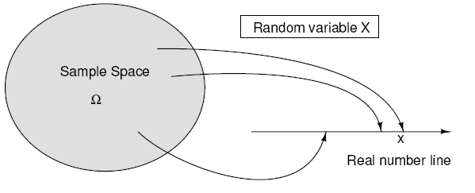
Mathematically, a rv is an assignment of a real number to each point in the sample space or a function that maps the sample space onto the real number line, i.e. the rv justs assigns a real number to each sample point.
Random variables can also be associated with time functions such as the amount of signal or noise present at a particular instant in time. The collection of all possible time functions that might be observed belongs to a random process and when the probability functions are also specified, our collection is called an ensemble. Any one member of this ensemble (e.g. x(t) as drawn previously) is a sample function, and the value of this function at any given time (e.g. t1) is a random variable.
From an engineering point of view, a random variable is a numerical description of the outcome of a random experiment. A random variable is simply a real-valued function defined over the sample space. We normally do not consider the entire sample space, but only concern ourselves with assigning probability to the various events associated with the random variables of interest. Most random variables are continuous (all possible values).
Now we need to define the events that are associated with the probability space. Let X be a random variable and x be any allowed value of X. The cumulative distribution function is defined to be the probability of the event that the X is ≤ to the allowed value x Fx(x) = Pr(X ≤ x). All the laws of probability must be obeyed for this concept, so we know;
its value is between 0 and 1 for all x
its value must be 0 at -infinity and
grows in a non-decreasing manner to 1 at +infinity.
Some examples of continuous and discrete cumulative distribution functions are shown below.
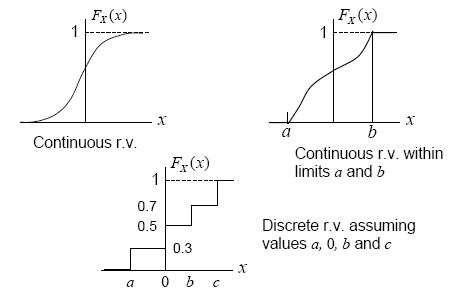
Although the distribution function discussed in the previous section is a complete description of the probability model for a single random variable, it is not the most convenient form for many calculations. What we use instead is the probability density function (pdf) which is the derivative of the probability distribution function. If you think of the normal (Gaussian) curve, you are actually viewing its pdf. Using R we can plot the pdf of a normally distributed random variable with a mean of 0 and a standard deviation of 1 (more on this shotly>
x <- seq (-6, 6, len = 100);
y <- cbind(dnorm(x, 0, 2));
matplot (x, y, type = "l", col = 1 );
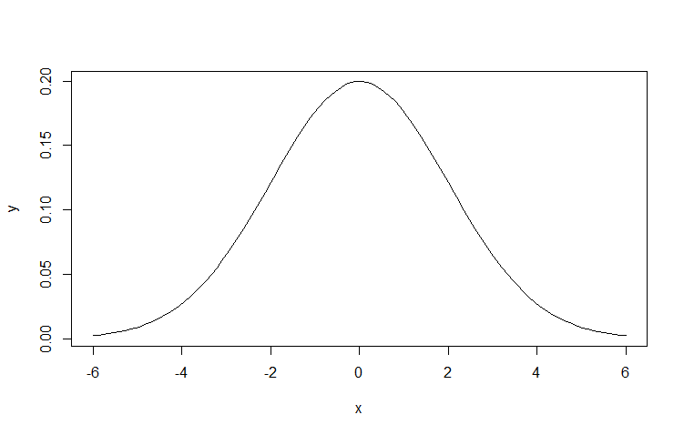
Characteristics of a probability density functions are that
all values of it >=0
the area under the “curve” = 1
the area between 2 variables (the sum or integral) is the Pr that X is between the 2 values and any value x on the probability distribution function can be found by integrating the pdf from - up to that value x.
In the figure below the top row of plots show the cumulative density function, and the bottom row is the corresponding probability density function for each.
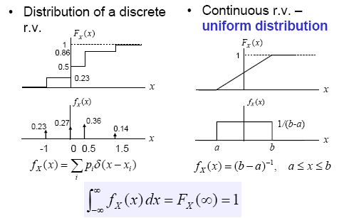
We will return to pdf plots and look at some of there fundamental characteristics after we introduce the basics of statistics in the next chapter.
STATISTICS
Typical uses of statistics generally fall into one of following applications:
Sampling theory - associated with the selecting samples from some population that is too large to examined completely
Estimation theory - concerned with making estimates or predictions based on the sampled data
Hypothesis testing - attempts to decide which of two or more hypotheses about the sampled data are true
Curve fitting and regression - attempts to find mathematical expressions that best represent sampled data trends
Analysis of variance - attempts to assess the significance of variations in the sampled data and the relation of these variations to the physical world from where the data was obtained.
From Statistics: An Introduction Using R by M. Crawley, 1st ed, 2009.
The key concept in statistics is variability. If you measure the same thing two different times you will get two (slightly) different answers. What we need statistics for is to determine how much of the variability is due to chance (random) only. All of the other variability will be due to equipment, measurement, environmental or human errors and can ideally be minimized under the proper conditions.
Note that a random error (i.e. indeterminate) is non-reproducible and a result of fluctuations in measurements. These fluctuations cause a measured value to deviate above or below its “true value”. All other errors are called systematic errors (i.e. determinate) and are reproducible and a result of a bias in one direction.
We won’t cover much in measurement theory but one important point is the difference between accuracy and precision;
accuracy – how close a measurement is to the “true” value (requires a standard)
precision – how close a series of measurements are to each other.
Look at the figure on the next page.
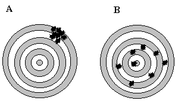
Variability is a big problem in manufacturing. If we are making any item we would like all of them to be identical (same dimensions, appearance, weight, operating characteristics, lifetimes etc.) when they are finished being assembled and this is the key concept in statistical process control.
In engineering we often run experiments and when we do we are interested in how things relate, e.g., how does variable B effect variable A, (e.g. voltage and current, current and temperature, temperature and velocity etc.)? We run carefully planned experiments in a manufacturing environment both to decrease variability and improve the product and this is called design of experiments (DOE).
The word we will use in experimentation is “significance”. Is the effect of B on A statistically significant? What significance means in this context is that the effect of B on A was “large” enough so that it could not be due to random chance alone. Ohms Law is a good example. If we hold the resistance constant, then as we increase the voltage “enough”, we find that the current increase will be statistically significant because there is a physical relationship between voltage and current.
By statistically significant we often use the rule of thumb which is called a 95% confidence level. In this case an event is unlikely (not statistically significant) if it occurs less than 5% of the time.
Now let us look at a manufacturing example where we are inspecting two different lots of parts and measuring the mean weight of each lot. What we want is to see if the two lots have the same mean weight (and this is known as the null hypothesis in statistics). The trick here is that we have to separate out mean weight differences due to pure chance (random errors) from the actual mean weight differences between the lots. If we are measuring lots that weigh 1000 lbs with a scale that is accurate to 1 lb. under ideal conditions and find a difference in mean weights of only 0.03 lbs we can probably state that the lots weight the same. On the other hand in the same scenario, if we find a mean weight difference of 100 lbs between the two lots and no obvious signs of measurement errors then we can probably safely state that the lots do NOT have the same mean weight.
We will use this same philosophy when we look at the effect of event B on event A. If we consider a linear regression of A and B, we generally begin with an assumption (again the null hypothesis) that A and B are independent, i.e. B has no effect on A. We now introduce the concept of a p (for probability) value. A p value is a statistical measure of the credibility of the null hypothesis and varies between 0 and 1. Using our previous example if we are measuring the mean weight between two lots where the null hypothesis is that the means are the same, a small p value (generally 0.05 or smaller) is a good statistical indication that the null hypothesis is unlikely to be true (low probability value) and in this case it means that the weight difference between the two lots is statistically significant. On the other hand, a large p-value (say 0.1 or greater) means that we have no compelling reason to reject the null hypothesis. Another important note to make here is that we have just stated that we “do not reject the null hypothesis” which is different than saying that the null hypothesis is true. These are two distinctly different statements. We could have failed to reject the null hypothesis because our sample size was too small or due to a large measurement error. Therefore be careful when quoting p values, they don’t tell the whole story.
Note that we can make two fundamental mistakes with our null hypothesis. The first error which is called a Type I error is when we reject the null hypothesis when it is actually true. The second error (Type II) is when we accept the null hypothesis when it is actually false. We will discuss these in more detail later but note that they work in opposition to each other. If we decrease our chances of making a Type I error, we will be increasing our chances of making a Type II error. Which one we choose to minimize depends on the application and costs associated with each type of error.
A good medical example is the null hypothesis that a patient does not have a fatal disease (easily falsifiable if there is a good test for the disease), therefore the physician will not prescribe a life-saving medicine which has few side-effects. Which type of error would we as the physician want to minimize? The Type I error is when we as the physician reject the null hypothesis and start treating the patient when in fact that patient is not sick with the fatal disease. Note we stated that the medicine has few side effects so the “cost” of this error may not be great. What about the Type II error; here we accept the null hypothesis that the patient is well when in fact they have the fatal disease. Since we do not treat them, they will die. Given this scenario and set of hypotheses, we will seek to minimize our chance of making a Type II error and live with an increased risk of making a Type I error.
Another important area in statistics is modeling (e.g., linear regression). The important concepts here are simplicity and adequacy. In other words we want the simplest possible (e.g. linear as opposed to quadratic) model that adequately explains most of the data. Remember Occam’s Razor (given a set of possible explanations, the best is often the simplest).
As an example of this let us take height and weight readings from 8 different individuals and try to model the relationship between the two variables. We could generate an 8th order polynomial that would perfectly fit the entire data set but have we really gained anything? Typically what we want to do with a model is to predict, so how well would our complex model do if we measure the height of a ninth person and want to estimate his / her weight? In general we would be better off with a lower order model that is not perfect – the key again is simplicity plus adequacy.
There are two additional concepts that are important in many different statistical applications and especially in experimental design; randomization and replication (repetition). We replicate to increase the reliability of our measurements and we randomize to reduce the bias in our measurements. Replication is important because of the problem of variability, if we measure something twice we will get two different answers. If we keep repeating the measurement or have other people measure we will get a distribution of answers ideally centered around the actual answer. An important component of good replication is independence. Independence means that we don’t want to take replicates that are either spatially or temporally grouped together. A time series is temporally grouped, e.g. if we measure the temperature at one location every minute the samples will not be independent. Likewise, if we are quality monitoring a manufacturing line by periodically sampling we don’t want to just sample the first five parts produced at the beginning of each shift. Spatial grouping must also be avoided, e.g. if we are sampling voters in a state we don’t want to take them all from one city or region.
You can see now why the concept of randomization also becomes important. Randomization is often assumed but it needs to be carefully considered before running an experiment. A good example would be an experiment where we wanted to measure some characteristic of trees in a forest. True randomization means that we cannot just look at the trees in one section of the forest, or choose the trees that are next to roads or choose just the small or large trees. The best way to randomize our sample would be to give each tree in the forest a unique integer value ahead of time and then use a random number generator to select the required number of values and then go to the corresponding tree and make the measurements. Truly random selection means that every relevant object in the population must have an identical probability of being chosen for the experiment. Anything short of this means that we are not choosing randomly and our statistical results will be biased in some manner.
Now we link probability and statistics in the next section when we discuss the statistics of a probability density function.
Univariate Statistics
After plotting a probability density function (pdf) from our experimental sampling operations, we are generally interested in several fundamental statistical measurements of the pdf and these are called univariate or descriptive statistics and are basically summaries derived from the data. The two most widely used univariate statistics of a pdf are its central tendency (e.g., mean or median) and its variability (e.g., standard deviation or variance).
Remember one important distinction between samples and populations from http://www.StatisticalPractice.com:
A sample is a set of observations drawn from a larger population. A sample is usually drawn to make a statement about the larger population from which it was taken. Sample and population are two different things and it is essential to maintain the distinction between them so that we can express ourselves clearly and be understood. Most of the time in statistical we deal with populations that are too large to work with, therefore we rely on carefully chosen (i.e., random) subsets of the population which are called samples.
data( ) # for a list of the data sets built into the basic R software
We begin with the women data set which looks at sample of American women between 30 – 39 years old.
women
height weight
1 58 115
2 59 117
3 60 120
4 61 123
5 62 126
6 63 129
7 64 132
8 65 135
9 66 139
10 67 142
11 68 146
12 69 150
13 70 154
14 71 159
15 72 164
One simple R command called summary quickly gives you a summary of key descriptive statistics for this dataset.
summary(women)
height weight
Min. :58.0 Min. :115.0
1st Qu.:61.5 1st Qu.:124.5
Median :65.0 Median :135.0
Mean :65.0 Mean :136.7
3rd Qu.:68.5 3rd Qu.:148.0
Max. :72.0 Max. :164.0
Central Tendency
The mean and median from the above summary are two example of statistical central tendency. The most commonly reported average is the mean which is the sum of the observations divided by the sample size. The mean is one measure of central tendency in the sense that it is the center of gravity.
mean(women);
height weight
65.0000 136.7333
The mean is invariably what people intend when they say average. Mean is a more precise term than average because the mean can only be the sum divided by the sample size. There are other quantities that are sometimes called averages. These include the median (or middle value), the mode (most commonly occurring value), and even the midrange (mean of minimum and maximum values).
Statisticians prefer means because they understand them better, that is, they understand the relation between sample and population means better than the relation between the sample and population value of other averages. Although note that the median is insensitive to this change in the distribution (more robust) and in some cases a better measure of central tendency. A symmetric distribution has its mean = median. As a distribution skews the mean moves out in the direction of skew. The median can be defined as the point where you have equal areas on each side.
median(women$height); median(women$weight)
65
135
Variability
The most common measure of variability or spread is the standard deviation (SD). The SD might also be called the "root-mean-square deviation", which describes the way it is calculated. The operations root, mean, and square are applied in reverse order to the deviations which are the individual differences between the observations and the mean. First, the deviations are squared. Next, the mean of the deviations is calculated. Finally, the square root of the mean is taken to obtain the SD (see below equation). To be precise, when the mean is taken, the sum of the squared deviations is divided by one less than the sample size rather than the sample size itself. There's no reason why it must be done this way, but this is the modern convention. Therefore the standard deviation is a measure of variability about the mean value of a sample.
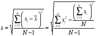
sd(women$height); sd(women$weight);
4.472136
15.49869
Why do we divide by N-1 which represents the degrees of freedom (DF) of sample? It is the number of independent values on which a result is based, or the number of values in the final calculation of a statistic that are free to vary
–for a population size of N. Here a DF = N-1 means one DF has been lost when calculating the sample mean. To calculate the SD of a random sample, we must first calculate the mean of that sample and then compute the sum of the several squared deviations from that mean. While there will be N such squared deviations, only (N - 1) of them are, in fact, free to assume any value whatsoever. This is because the final squared deviation from the mean must include the one value of X such that the sum of all the X’s divided by N will equal the obtained mean of the sample. All of the other (N - 1) squared deviations from the mean can, theoretically, have any values whatsoever. For these reasons, the SD of a sample is said to have only (N - 1) degrees of freedom.
If we have only one data point we can fit an infinite number of straight lines through it but we obtain no useful information because we have zero degrees of freedom. If we have two data points we can fit a line through both perfectly but we cannot go any further (e.g. how good of a fit, confidence intervals etc.) because we have used up our degrees of freedom in calculating the linear fit.
Degrees of freedom represent the number of measurements exceeding the amount absolutely necessary to measure the statistic in question. For example, to measure the diameter of a steel rod would require a minimum of one measurement. If ten measurements are taken, the set of ten measurements has nine degrees of freedom and we could therefore calculate additional parameters on this data such as variance. We can extend this concept to explain applications to statistical estimators, i.e. if N measurements are made on M unknown quantities then the degrees of freedom are N - M.
Degrees of freedom are lost for each parameter in a model that is calculated in the process of estimating another parameter. For example, one degree of freedom is lost when we estimate the population mean using the sample mean and two degrees of freedoare lost when we estimate the standard error of estimate in a regression using (one degree of freedom for the Y-intercept and one degree of freedom for the slope of the regression line).
There are other statistical measures of variability including range which is the difference between the maximum and minimum value. The problem with this statistic is that it is once again sensitive to extreme values.
diff(range(women$height)); diff(range(women$weight));
14
49
A related statistic is the interquartile range which is the difference between the first and third quartile of data (and is therefore less sensitive to extreme values than the range);
IQR(women$height); IQR(women$weight);
7
23.5
From the above data summary of women we see calculate the IQR by subtracting the first quartile from the third quartile for each variable. For height IQR = 68.5 – 61.5 = 7. For weight = 148 – 124.5 = 23.5
Keep in mind that what we are actually calculating are sample means and sample standard deviations, NOT population means and population standard deviations. We can’t determine population parameter unless we measure all the samples within the population. So we are stuck with sample parameters and our goal is often to insure that these are unbiased estimators of the true (but unknowable) population parameter. An unbiased estimator means that the expected value of the estimator will be equal to the population parameter or looking at it another way, the mean of the pdf of the estimator will be equal to the population parameter.
Shape
The third univariate statistical description we generally consider is the overall shape of the probability density function and compare it to a normal or Gaussian distribution. In addition to the shape, we are also interested in the skew / symmetry of the distribution and the number of peaks. We will go into more detail about univariate statistics in the Data Visualizaion section of the next chapter.
Why Do We Compare a PDF to a Normal Distribution?
The normal distribution has a number of charteristics that make it easy to statistically analyze and the Central Limit Theorem comes into play. What this theorem states is (from https://en.wikipedia.org/wiki/Central_limit_theorem) :
Suppose we have a dataset containing thousand of randomly sample women’s height. If we take multiple randomly selected subsets from this dataset and plot the mean of each one of them on a single plot we find out that the mean will be distributed normally. This works out for any sampled population no matter how skewed the indidivual dataset is.
Another simple example of this is that if one flips a coin many times the probability of getting a given number of heads in a series of flips will approach a normal curve, with the mean equal to half the total number of flips in each series. (In the limit of an infinite number of flips, it will equal a normal curve.)
The followings graphically shows an example of the Central Limit Theorem. First we use a uniformally distributed random variable (think of a 11-sided fair die) and simulate randomly rollit it a 1000 times. One possible histogram plot of the results looks like the following (we will disuss histograms in the next chapter)
set.seed (113) # This allows us to create reproducible random results
hist(runif(1000, min=0, max=10), main="Uniform RV");
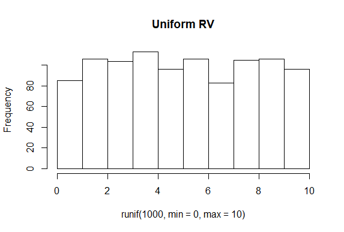
Now let us look at the distribution of the mean value of 10,000 groups of 50 uniform random variables between 0 and 10. Note your results will be slightly different since we are not seting the seed.
no.times <- 10000;
means <- numeric(no.times);
for (i in 1:no.times) {
means[i] <- mean(runif(50, min=0, max=10))
}
hist(means, br=30);
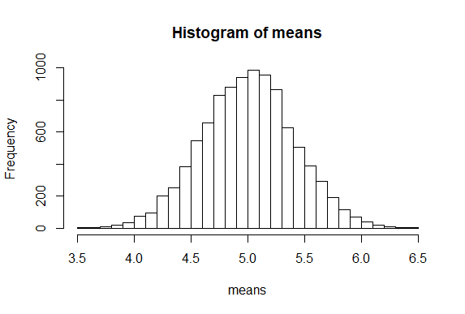
and we that the means from the uniform distribution are approximately normally distributed.
Multivariate Statistics
Covariance
When two or more random variables are defined on a probability space, it is often useful to describe how they vary together (the relationship between them). A common measure of their relationship is the covariance, and the other is the correlation. Below is the definition for the covariance.
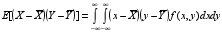
An important point is that covariance is a measure of linear relationship between random variables. If the relationship between the random variables is nonlinear, the covariance may NOT be sensitive to the relationship. This is illustrated below in (d).
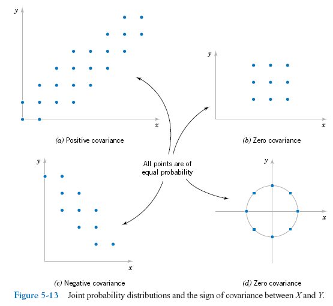
Correlation
Another measure of the relationship between two random variables that is more common to us is the correlation which is often easier to interpret.
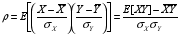
One of the properties of the correlation coefficient (ρ) is that it must be between –1 and 1, and if X and Y are statistically independent (SI) then ρ = 0. Note that the converse is NOT necessarily true; if ρ = 0 this does NOT imply SI (unless they are gaussian). Note also that correlation is again a measure of linear relationship between random variables.
Remember when two events are said to be statistically independent of each other, this means is that the probability that one event occurs in no way affects the probability of the other event occurring.
We go back to our women dataset and plot height vs. weight in what is known as a scatterplot (more on this in the next chapter).
plot(women$height, women$weight)
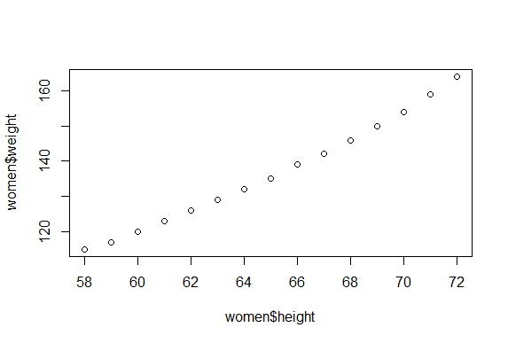
Next we calculate the covariance and correlation between the two variables
cov(women$height, women$weight)
69
cor(women$height, women$weight)
0.995
We focus on the correlation since it is easier to interpret and see that there is a very strong positive correlation between women’s height and weight.
Regression
Besides covariance and correlation, another important multivariate descriptive statistic is least squares linear regression. The key difference between correlation and regression is that a correlation results in an index describing the linear relationship between pairs of variables which simply tells you how much one variable tends to change (and the direction of change) when the other one does, but a regression can predict the relationship (and not just a linear one) between two or more variables and derives a line (or curve) that can be used to predict Y values for new X values. The regression results also contain a number of useful statistical parameters that can be used to better understand the relationship between the variables. In our women data set, we arbitrarily let weight be the Y or dependent variable and height the independent or X variable.
reg.lm <- lm(women$weight ~ women$height)
summary(reg.lm)
Residuals:
Min 1Q Median 3Q Max
-1.7333 -1.1333 -0.3833 0.7417 3.1167
Coefficients:
Estimate Std. Error t value Pr(>|t|)
(Intercept) -87.51667 5.93694 -14.74 1.71e-09 ***
women$height 3.45000 0.09114 37.85 1.09e-14 ***
---
Signif. codes: 0 ‘***’ 0.001 ‘**’ 0.01 ‘*’ 0.05 ‘.’ 0.1 ‘ ’ 1
Residual standard error: 1.525 on 13 degrees of freedom
Multiple R-squared: 0.991, Adjusted R-squared: 0.9903
F-statistic: 1433 on 1 and 13 DF, p-value: 1.091e-14
plot(women$height, women$weight)
abline(lm(women$weight ~ women$height))
fitted <- predict(lm(women$weight ~ women$height))
for (i in 1:20)
lines(c(women$height [i], women$height [i]),c(women$weight [i],fitted[i])
)
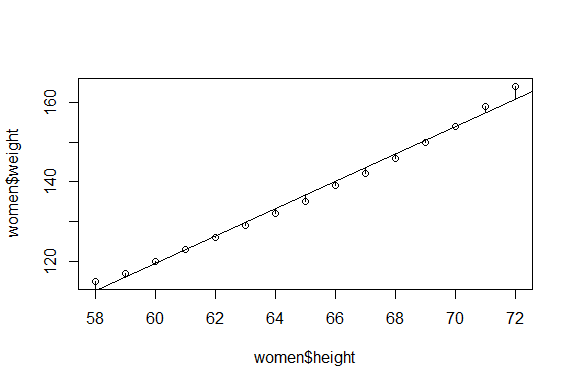
Graphically, the regression line is based on minimizing the sum of the squares of the vertical deviations from each point to the regression line.
We will go into more details about regression later this semester.
END CHAPTER 3